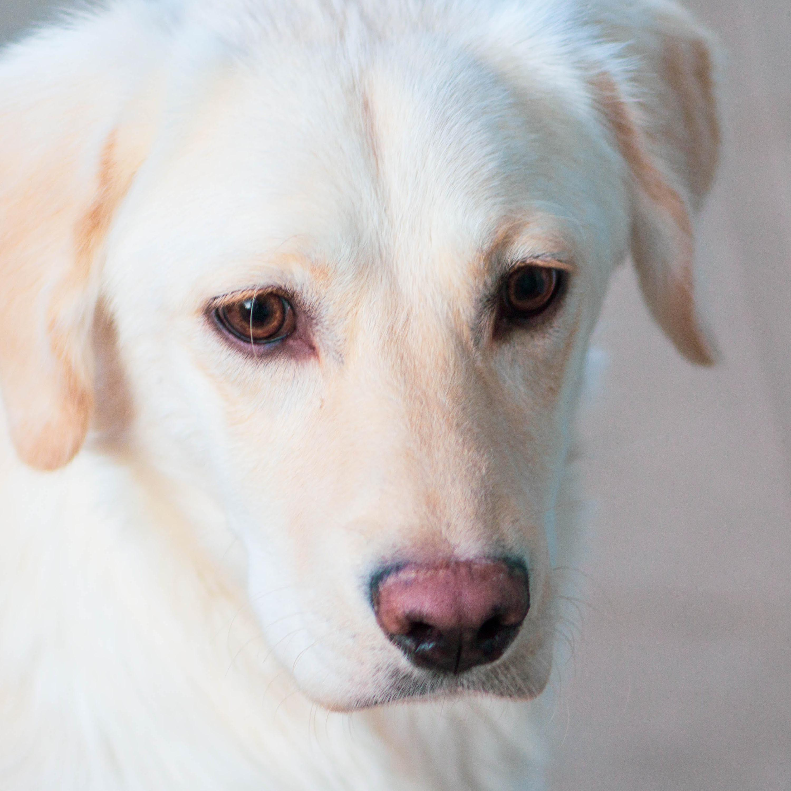

Trusting, Gentle, Agile
Labrador Retrievers, also known as Labrador, were created because of fishing dogs. They are great with people and other dogs, making them excellent service dogs. They have lots of energy so lots of playtimes are required or would be nice.
Contact Us: Phone: 012-345-6789 email: puppypalace@puppies.com